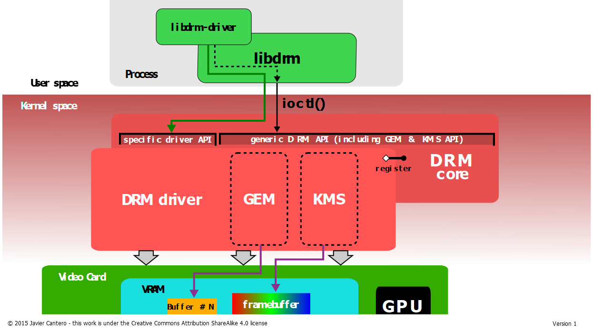
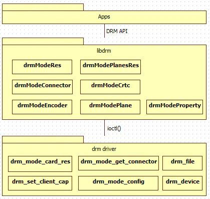
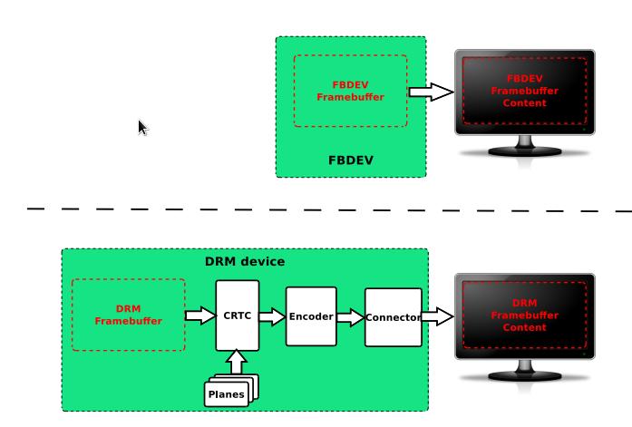
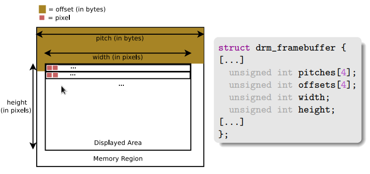
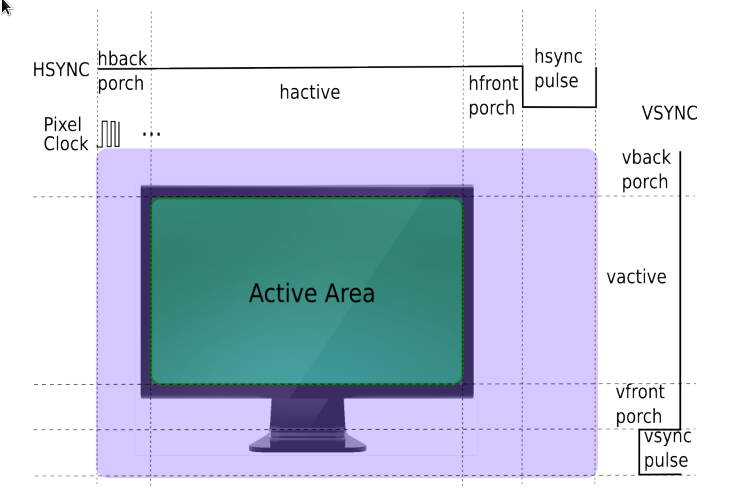
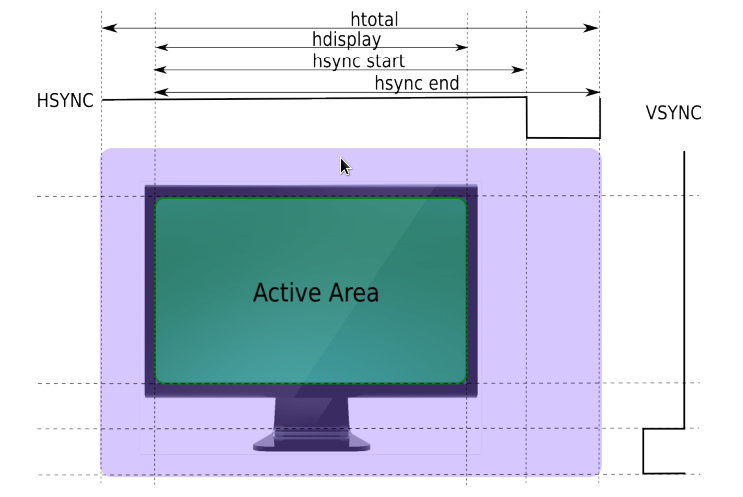
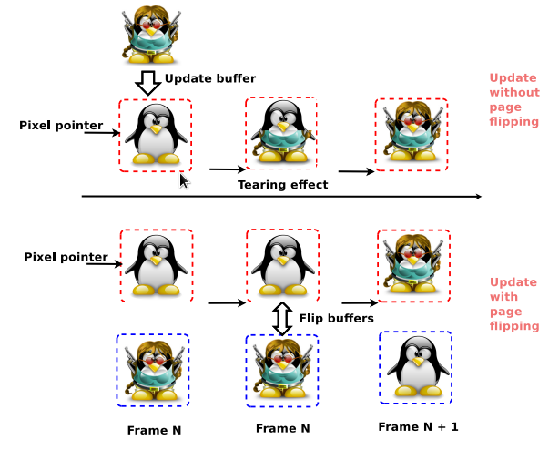
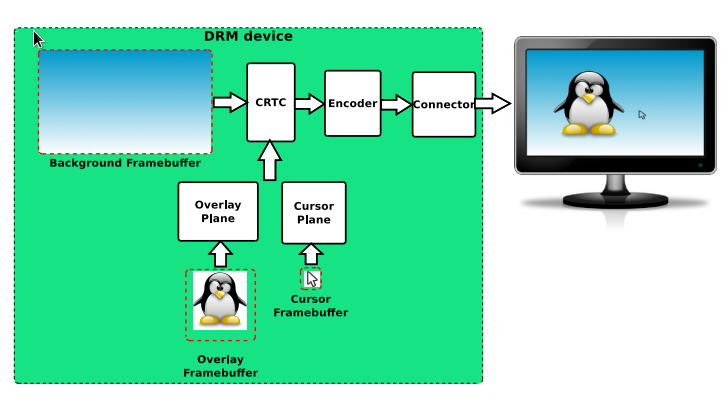
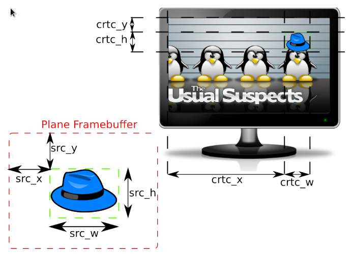

-D platforms=… List the platforms (window systems) to support. Its argument is a comma separated string such as -D platforms=x11,wayland. It decides the platforms a driver may support. The first listed platform is also used by the main library to decide the native platform.
The available platforms are x11, wayland, android, and haiku. The android platform can either be built as a system component, part of AOSP, using Android.mk files, or cross-compiled using appropriate options. Unless for special needs, the build system should select the right platforms automatically.
EGL_PLATFORM
This variable specifies the native platform. The valid values are the same as those for -D platforms=.... When the variable is not set, the main library uses the first platform listed in -D platforms=… as the native platform.
Extensions like EGL_MESA_drm_display define new functions to create displays for non-native platforms. These extensions are usually used by applications that support non-native platforms. Setting this variable is probably required only for some of the demos found in mesa/demo repository.
platform为gbm时，可以创建window surface，用于交换。
创建的window surface对应一个GBM surface（gbm_surface_create）.
GBM(Generic Buffer Management) API是建立在DRM上的一个缓冲区管理api。
wayland book: the GBM (Generic Buffer Management) library — an abstraction on top of libdrm for allocating buffers on the GPU.
mesa wiki At XDC2014, Nvidia employee Andy Ritger proposed to enhance EGL in order to replace GBM.[102] This was not taken positively by the community, and Nvidia eventually changed their mind,[103] and took another approach.
int
gbm_device_get_fd(struct gbm_device *gbm);
const char *
gbm_device_get_backend_name(struct gbm_device *gbm);
int
gbm_device_is_format_supported(struct gbm_device *gbm,
uint32_t format, uint32_t usage);
void
gbm_device_destroy(struct gbm_device *gbm);
struct gbm_device *
gbm_create_device(int fd);
struct gbm_bo *
gbm_bo_create(struct gbm_device *gbm,
uint32_t width, uint32_t height,
uint32_t format, uint32_t flags);
#define GBM_BO_IMPORT_WL_BUFFER 0x5501
#define GBM_BO_IMPORT_EGL_IMAGE 0x5502
struct gbm_bo *
gbm_bo_import(struct gbm_device *gbm, uint32_t type,
void *buffer, uint32_t usage);
uint32_t
gbm_bo_get_width(struct gbm_bo *bo);
uint32_t
gbm_bo_get_height(struct gbm_bo *bo);
uint32_t
gbm_bo_get_stride(struct gbm_bo *bo);
uint32_t
gbm_bo_get_format(struct gbm_bo *bo);
struct gbm_device *
gbm_bo_get_device(struct gbm_bo *bo);
union gbm_bo_handle
gbm_bo_get_handle(struct gbm_bo *bo);
int
gbm_bo_write(struct gbm_bo *bo, const void *buf, size_t count);
void
gbm_bo_set_user_data(struct gbm_bo *bo, void *data,
void (*destroy_user_data)(struct gbm_bo *, void *));
void *
gbm_bo_get_user_data(struct gbm_bo *bo);
void
gbm_bo_destroy(struct gbm_bo *bo);
struct gbm_surface *
gbm_surface_create(struct gbm_device *gbm,
uint32_t width, uint32_t height,
uint32_t format, uint32_t flags);
struct gbm_bo *
gbm_surface_lock_front_buffer(struct gbm_surface *surface);
void
gbm_surface_release_buffer(struct gbm_surface *surface, struct gbm_bo *bo);
int
gbm_surface_has_free_buffers(struct gbm_surface *surface);
void
gbm_surface_destroy(struct gbm_surface *surface);
DRM, direct render manager, 本来是应X Server的DRI需求而开发的。后来X没落了，但DRM仍然很活跃。
DRM主要包括三部分：（1）Auth，即谁有权使用设备，谁是master, (2) GEM，即buffer object管理, (3) KMS，即送显及显示器的配置。
DRM分用户态和内核态两部分。


原文链接里有代码，可以打开看看。
KMS：CRTC，ENCODER，CONNECTOR，PLANE，FB，VBLANK，property
GEM：DUMB、PRIME、fence
DUMB 只支持连续物理内存，基于kernel中通用CMA API实现，多用于小分辨率简单场景
PRIME 连续、非连续物理内存都支持，基于DMA-BUF机制，可以实现buffer共享，多用于大内存复杂场景
fence buffer同步机制，基于内核dma_fence机制实现，用于防止显示内容出现异步问题
————————————————
版权声明：本文为CSDN博主「何小龙」的原创文章，遵循CC 4.0 BY-SA版权协议，转载请附上原文出处链接及本声明。
原文链接：https://blog.csdn.net/hexiaolong2009/article/details/83720940
这个文档里列举了所有缓冲区管理相关的kernel API。
缓冲区或者说显存的管理，主要是分配、释放、进程间共享和同步。
GEM是一个比较差的设计，它通过一个32位的name和一个32位的handle来代表一个缓冲区。由于32位数据是可以穷举的，所以带来一些安全问题。
比GEM更优的方案是DMA_buf。
DMA_buf不光用来支持显卡驱动，也用来支持V4L2等，使用比较普遍。
PRIME使用DMA_buf来在进程间共享缓冲区。为了与GEM相互转换，新提出了两个DRM API。
这一块主要讲内核和硬件部分，下面是一些摘要。
送显有三个途径: (1) fbdev framebfufer, (2) drm framebuffer, (3) v4l2
KMS是DRM的一个sub part，主要处理送显。KMS是fbdev alternative。
显卡的设备文件分为三部分： /dev/dri/renderX （仅渲染和非特权ioctrl） /dev/dri/controlDX (暂时是无用节点，可能将来也不会有用) /dev/dri/cardX (传统设备节点，支持所有功能)
渲染节点无需特权，仅支持PRIME DMA_buf buffer object的申请，不支持GEM。 cardX节点支持GEN和送显。
DMA_buf可以理解为上层的封送结构，它本身不提供分配缓冲的方法。真正的缓冲区来源于ION、CMA等分配器。
https://blog.csdn.net/hexiaolong2009/article/details/105961192
PRIME最初用于nVidia的GPU offloading，所以GPU offloading就是集成显卡合成送显、独立显示渲染。这样两个显卡分工合作，可以在不切换显示的情况下，提高游戏性能。 具体参考：https://airlied.livejournal.com/71734.html







#include <EGL/egl.h>
#include <EGL/eglext.h>
#include <GLES3/gl31.h>
#include <assert.h>
#include <fcntl.h>
#include <gbm.h>
#include <stdbool.h>
#include <stdio.h>
#include <string.h>
#include <unistd.h>
/* a dummy compute shader that does nothing */
#define COMPUTE_SHADER_SRC " \
#version 310 es\n \
\
layout (local_size_x = 1, local_size_y = 1, local_size_z = 1) in; \
\
void main(void) { \
/* awesome compute code here */ \
} \
"
int32_t
main (int32_t argc, char* argv[])
{
bool res;
int32_t fd = open ("/dev/dri/renderD128", O_RDWR);
assert (fd > 0);
struct gbm_device *gbm = gbm_create_device (fd);
assert (gbm != NULL);
/* setup EGL from the GBM device */
EGLDisplay egl_dpy = eglGetPlatformDisplay (EGL_PLATFORM_GBM_MESA, gbm, NULL);
assert (egl_dpy != NULL);
res = eglInitialize (egl_dpy, NULL, NULL);
assert (res);
const char *egl_extension_st = eglQueryString (egl_dpy, EGL_EXTENSIONS);
assert (strstr (egl_extension_st, "EGL_KHR_create_context") != NULL);
assert (strstr (egl_extension_st, "EGL_KHR_surfaceless_context") != NULL);
static const EGLint config_attribs[] = {
EGL_RENDERABLE_TYPE, EGL_OPENGL_ES3_BIT_KHR,
EGL_NONE
};
EGLConfig cfg;
EGLint count;
res = eglChooseConfig (egl_dpy, config_attribs, &cfg, 1, &count);
assert (res);
res = eglBindAPI (EGL_OPENGL_ES_API);
assert (res);
static const EGLint attribs[] = {
EGL_CONTEXT_CLIENT_VERSION, 3,
EGL_NONE
};
EGLContext core_ctx = eglCreateContext (egl_dpy,
cfg,
EGL_NO_CONTEXT,
attribs);
assert (core_ctx != EGL_NO_CONTEXT);
res = eglMakeCurrent (egl_dpy, EGL_NO_SURFACE, EGL_NO_SURFACE, core_ctx);
assert (res);
/* setup a compute shader */
GLuint compute_shader = glCreateShader (GL_COMPUTE_SHADER);
assert (glGetError () == GL_NO_ERROR);
const char *shader_source = COMPUTE_SHADER_SRC;
glShaderSource (compute_shader, 1, &shader_source, NULL);
assert (glGetError () == GL_NO_ERROR);
glCompileShader (compute_shader);
assert (glGetError () == GL_NO_ERROR);
GLuint shader_program = glCreateProgram ();
glAttachShader (shader_program, compute_shader);
assert (glGetError () == GL_NO_ERROR);
glLinkProgram (shader_program);
assert (glGetError () == GL_NO_ERROR);
glDeleteShader (compute_shader);
glUseProgram (shader_program);
assert (glGetError () == GL_NO_ERROR);
/* dispatch computation */
glDispatchCompute (1, 1, 1);
assert (glGetError () == GL_NO_ERROR);
printf ("Compute shader dispatched and finished successfully\n");
/* free stuff */
glDeleteProgram (shader_program);
eglDestroyContext (egl_dpy, core_ctx);
eglTerminate (egl_dpy);
gbm_device_destroy (gbm);
close (fd);
return 0;
}
代码编译：gcc main.c pkg-config –libs –cflags egl gbm gl`
下面这段代码渲染到一个gbm_surface，gbm_surface本身没有关联一个窗口系统，所以它本质上只是一个交换链。
// This example program creates an EGL surface from a GBM surface.
//
// If the macro EGL_MESA_platform_gbm is defined, then the program
// creates the surfaces using the methods defined in this specification.
// Otherwise, it uses the methods defined by the EGL 1.4 specification.
//
// Compile with `cc -std=c99 example.c -lgbm -lEGL`.
#include <stdlib.h>
#include <string.h>
#include <sys/types.h>
#include <sys/stat.h>
#include <fcntl.h>
#include <EGL/egl.h>
#include <gbm.h>
struct my_display {
struct gbm_device *gbm;
EGLDisplay egl;
};
struct my_config {
struct my_display dpy;
EGLConfig egl;
};
struct my_window {
struct my_config config;
struct gbm_surface *gbm;
EGLSurface egl;
};
static void
check_extensions(void)
{
#ifdef EGL_MESA_platform_gbm
const char *client_extensions = eglQueryString(EGL_NO_DISPLAY, EGL_EXTENSIONS);
if (!client_extensions) {
// EGL_EXT_client_extensions is unsupported.
abort();
}
if (!strstr(client_extensions, "EGL_MESA_platform_gbm")) {
abort();
}
#endif
}
static struct my_display
get_display(void)
{
struct my_display dpy;
int fd = open("/dev/dri/card0", O_RDWR | FD_CLOEXEC);
if (fd < 0) {
abort();
}
dpy.gbm = gbm_create_device(fd);
if (!dpy.gbm) {
abort();
}
#ifdef EGL_MESA_platform_gbm
dpy.egl = eglGetPlatformDisplayEXT(EGL_PLATFORM_GBM_MESA, dpy.gbm, NULL);
#else
dpy.egl = eglGetDisplay(dpy.gbm);
#endif
if (dpy.egl == EGL_NO_DISPLAY) {
abort();
}
EGLint major, minor;
if (!eglInitialize(dpy.egl, &major, &minor)) {
abort();
}
return dpy;
}
static struct my_config
get_config(struct my_display dpy)
{
struct my_config config = {
.dpy = dpy,
};
EGLint egl_config_attribs[] = {
EGL_BUFFER_SIZE, 32,
EGL_DEPTH_SIZE, EGL_DONT_CARE,
EGL_STENCIL_SIZE, EGL_DONT_CARE,
EGL_RENDERABLE_TYPE, EGL_OPENGL_ES2_BIT,
EGL_SURFACE_TYPE, EGL_WINDOW_BIT,
EGL_NONE,
};
EGLint num_configs;
if (!eglGetConfigs(dpy.egl, NULL, 0, &num_configs)) {
abort();
}
EGLConfig *configs = malloc(num_configs * sizeof(EGLConfig));
if (!eglChooseConfig(dpy.egl, egl_config_attribs,
configs, num_configs, &num_configs)) {
abort();
}
if (num_configs == 0) {
abort();
}
// Find a config whose native visual ID is the desired GBM format.
for (int i = 0; i < num_configs; ++i) {
EGLint gbm_format;
if (!eglGetConfigAttrib(dpy.egl, configs[i],
EGL_NATIVE_VISUAL_ID, &gbm_format)) {
abort();
}
if (gbm_format == GBM_FORMAT_XRGB8888) {
config.egl = configs[i];
free(configs);
return config;
}
}
// Failed to find a config with matching GBM format.
abort();
}
static struct my_window
get_window(struct my_config config)
{
struct my_window window = {
.config = config,
};
window.gbm = gbm_surface_create(config.dpy.gbm,
256, 256,
GBM_FORMAT_XRGB8888,
GBM_BO_USE_RENDERING);
if (!window.gbm) {
abort();
}
#ifdef EGL_MESA_platform_gbm
window.egl = eglCreatePlatformWindowSurfaceEXT(config.dpy.egl,
config.egl,
window.gbm,
NULL);
#else
window.egl = eglCreateWindowSurface(config.dpy.egl,
config.egl,
window.gbm,
NULL);
#endif
if (window.egl == EGL_NO_SURFACE) {
abort();
}
return window;
}
int
main(void)
{
check_extensions();
struct my_display dpy = get_display();
struct my_config config = get_config(dpy);
struct my_window window = get_window(config);
return 0;
}
送显主要是就是给drm framebuffer送一个bo。
这个bo可以是gbm_surface交换链中的一个bo。 送显一定要用card节点。
int fd = open("/dev/dri/card0");
drmModeResPtr res = drmModeGetResources(fd);
drmModeConnectorPtr connector = NULL;
for (int i = 0; i < res->count_connectors; i++) {
connector = drmModeGetConnector(fd, res->connectors[i]);
// find a connected connection
if (connector->connection == DRM_MODE_CONNECTED)
break;
}
drmModeEncoderPtr encoder = drmModeGetEncoder(fd, connector->encoder_id);
drmModeCrtcPtr crtc = drmModeGetCrtc(fd, encoder->crtc_id);
drmModeFBPtr fb = drmModeGetFB(fd, crtc->buffer_id);
struct gbm_bo *bo = gbm_surface_lock_front_buffer(my_gbm_surface);
uint32_t my_fb;
drmModeAddFB(fd, gbm_bo_get_handle(bo).u32, &my_fb);
drmModeSetCrtc(fd, crtc->crtc_id, my_fb);
int fd = open("/dev/dri/renderD128");
struct gbm_device *gbm = gbm_create_device(fd);
struct gbm_surface *gs = gbm_surface_create(gbm);
EGLDisplay display = eglGetPlatformDisplayEXT(gbm);
EGLSurface surface = eglCreatePlatformWindowSurfaceEXT(display, gs);
EGLContext context = eglCreateContext(display);
eglMakeCurrent(display, surface, surface, context);
// OpenGL Render
...
eglSwapBuffers(display, surface);
注意，送显在另一个线程。
int fd = open("/dev/dri/card0");
drmModeResPtr res = drmModeGetResources(fd);
drmModeConnectorPtr connector = NULL;
for (int i = 0; i < res->count_connectors; i++) {
connector = drmModeGetConnector(fd, res->connectors[i]);
// find a connected connection
if (connector->connection == DRM_MODE_CONNECTED)
break;
}
drmModeEncoderPtr encoder = drmModeGetEncoder(fd, connector->encoder_id);
drmModeCrtcPtr crtc = drmModeGetCrtc(fd, encoder->crtc_id);
drmModeFBPtr fb = drmModeGetFB(fd, crtc->buffer_id);
struct gbm_bo *bo = gbm_surface_lock_front_buffer(gs);
uint32_t my_fb;
drmModeAddFB(fd, gbm_bo_get_handle(bo).u32, &my_fb);
drmModeSetCrtc(fd, crtc->crtc_id, my_fb);
// 获得缓冲
struct gbm_bo *bo = gbm_surface_lock_front_buffer(gs);
// 用unix local socket发送缓冲的dma-buf
struct msghdr msg;
struct cmsghdr *cmsg = CMSG_FIRSTHDR(&msg);
*((int *) CMSG_DATA(cmsg)) = gbm_bo_get_fd(bo);
sendmsg(sock, &msg);
// 接收dma-buf
struct msghdr msg;
recvmsg(sock, &msg);
struct cmsghdr *cmsg = CMSG_FIRSTHDR(&msg);
int fd = *((int *) CMSG_DATA(cmsg));
// 还原缓冲
struct gbm_import_fd_data gbm_data = {.fd = fd};
struct gbm_bo *bo = gbm_bo_import(gbm, &gbm_data);
// 然后显示
struct gbm_import_fd_data gbm_data = {.fd = fd};
struct gbm_bo *bo = gbm_bo_import(gbm, &gbm_data);
EGLImageKHR image = eglCreateImageKHR(display, context, bo);
glEGLImageTargetTexture2DOES(GL_TEXTURE_2D, image);
以下代码复制自：T知乎
更详细且严谨的代码请参考: GITHUB
/* 打开设备有专门的接口：drmOpen ，但此处为方便，使用open函数 */
int fd = open("/dev/dri/card0", O_RDWR | O_CLOEXEC);
if (fd < 0) {
ret = -errno;
fprintf(stderr, "cannot open '%s': %m\n", node);
return ret;
}
DRM的能力通过drmGetCap接口获取，用drm_get_cap结构描述：
/** DRM_IOCTL_GET_CAP ioctl argument type */
struct drm_get_cap {
__u64 capability;
__u64 value;
};
int drmGetCap(int fd, uint64_t capability, uint64_t *value)
{
struct drm_get_cap cap;
int ret;
memclear(cap);
cap.capability = capability;
ret = drmIoctl(fd, DRM_IOCTL_GET_CAP, &cap);
if (ret)
return ret;
*value = cap.value;
return 0;
}
使用示例：
uint64_t has_dumb;
if (drmGetCap(fd, DRM_CAP_DUMB_BUFFER, &has_dumb) < 0 || !has_dumb) {
fprintf(stderr, "drm device '%s' does not support dumb buffers\n",
node);
close(fd);
return -EOPNOTSUPP;
}
获取Resource具体看以下函数：
drmModeResPtr drmModeGetResources(int fd)
Resource结构封装：
struct drm_mode_card_res {
__u64 fb_id_ptr;
__u64 crtc_id_ptr;
__u64 connector_id_ptr;
__u64 encoder_id_ptr;
__u32 count_fbs;
__u32 count_crtcs;
__u32 count_connectors;
__u32 count_encoders;
__u32 min_width, max_width;
__u32 min_height, max_height;
};
typedef struct _drmModeRes {
int count_fbs;
uint32_t *fbs;
int count_crtcs;
uint32_t *crtcs;
int count_connectors;
uint32_t *connectors;
int count_encoders;
uint32_t *encoders;
uint32_t min_width, max_width;
uint32_t min_height, max_height;
} drmModeRes, *drmModeResPtr;
使用示例：
/* retrieve resources */
int ret = drmModeGetResources(fd);
if (!res) {
fprintf(stderr, "cannot retrieve DRM resources (%d): %m\n",
errno);
return -errno;
}
_drmModeConnector描述结构：
typedef struct _drmModeConnector {
uint32_t connector_id;
uint32_t encoder_id; /**< Encoder currently connected to */
uint32_t connector_type;
uint32_t connector_type_id;
drmModeConnection connection;
uint32_t mmWidth, mmHeight; /**< HxW in millimeters */
drmModeSubPixel subpixel;
int count_modes;
drmModeModeInfoPtr modes;
int count_props;
uint32_t *props; /**< List of property ids */
uint64_t *prop_values; /**< List of property values */
int count_encoders;
uint32_t *encoders; /**< List of encoder ids */
} drmModeConnector, *drmModeConnectorPtr;
使用示例：
drmModeConnector *conn = drmModeGetConnector(fd, res->connectors[i]);
if (!conn) {
fprintf(stderr, "cannot retrieve DRM connector %u:%u (%d): %m\n",
i, res->connectors[i], errno);
continue;
}
Encoder的结构描述：
typedef struct _drmModeEncoder {
uint32_t encoder_id;
uint32_t encoder_type;
uint32_t crtc_id;
uint32_t possible_crtcs;
uint32_t possible_clones;
} drmModeEncoder, *drmModeEncoderPtr;
使用示例：
if (conn->encoder_id)
drmModeEncoder *enc = drmModeGetEncoder(fd, conn->encoder_id);
}
drmModeEncoderPtr drmModeGetEncoder(int fd, uint32_t encoder_id)
{
struct drm_mode_get_encoder enc;
drmModeEncoderPtr r = NULL;
memclear(enc);
enc.encoder_id = encoder_id;
if (drmIoctl(fd, DRM_IOCTL_MODE_GETENCODER, &enc))
return 0;
if (!(r = drmMalloc(sizeof(*r))))
return 0;
r->encoder_id = enc.encoder_id;
r->crtc_id = enc.crtc_id;
r->encoder_type = enc.encoder_type;
r->possible_crtcs = enc.possible_crtcs;
r->possible_clones = enc.possible_clones;
return r;
}
CRTC结构描述：
struct crtc {
drmModeCrtc *crtc;
drmModeObjectProperties *props;
drmModePropertyRes **props_info;
drmModeModeInfo *mode;
};
typedef struct _drmModeCrtc {
uint32_t crtc_id;
uint32_t buffer_id; /**< FB id to connect to 0 = disconnect */
uint32_t x, y; /**< Position on the framebuffer */
uint32_t width, height;
int mode_valid;
drmModeModeInfo mode;
int gamma_size; /**< Number of gamma stops */
} drmModeCrtc, *drmModeCrtcPtr;
创建DUMB Buffer：
ret = drmIoctl(fd, DRM_IOCTL_MODE_CREATE_DUMB, &creq);
if (ret < 0) {
fprintf(stderr, "cannot create dumb buffer (%d): %m\n",
errno);
return -errno;
}
添加FrameBuffer：
/* create framebuffer object for the dumb-buffer */
ret = drmModeAddFB(fd, dev->width, dev->height, 24, 32, dev->stride,
dev->handle, &dev->fb);
if (ret) {
fprintf(stderr, "cannot create framebuffer (%d): %m\n",
errno);
ret = -errno;
goto err_destroy;
}
准备map：
/* prepare buffer for memory mapping */
memset(&mreq, 0, sizeof(mreq));
mreq.handle = dev->handle;
ret = drmIoctl(fd, DRM_IOCTL_MODE_MAP_DUMB, &mreq);
if (ret) {
fprintf(stderr, "cannot map dumb buffer (%d): %m\n",
errno);
ret = -errno;
goto err_fb;
}
做map操作：
/* perform actual memory mapping */
dev->map = mmap(0, dev->size, PROT_READ | PROT_WRITE, MAP_SHARED,
fd, mreq.offset);
if (dev->map == MAP_FAILED) {
fprintf(stderr, "cannot mmap dumb buffer (%d): %m\n",
errno);
ret = -errno;
goto err_fb;
}
准备函数：drmModeGetCrtc、drmModeSetCrtc
drmModeCrtcPtr drmModeGetCrtc(int fd, uint32_t crtcId)
{
struct drm_mode_crtc crtc;
drmModeCrtcPtr r;
memclear(crtc);
crtc.crtc_id = crtcId;
if (drmIoctl(fd, DRM_IOCTL_MODE_GETCRTC, &crtc))
return 0;
/*
* return
*/
if (!(r = drmMalloc(sizeof(*r))))
return 0;
r->crtc_id = crtc.crtc_id;
r->x = crtc.x;
r->y = crtc.y;
r->mode_valid = crtc.mode_valid;
if (r->mode_valid) {
memcpy(&r->mode, &crtc.mode, sizeof(struct drm_mode_modeinfo));
r->width = crtc.mode.hdisplay;
r->height = crtc.mode.vdisplay;
}
r->buffer_id = crtc.fb_id;
r->gamma_size = crtc.gamma_size;
return r;
}
int drmModeSetCrtc(int fd, uint32_t crtcId, uint32_t bufferId,
uint32_t x, uint32_t y, uint32_t *connectors, int count,
drmModeModeInfoPtr mode)
{
struct drm_mode_crtc crtc;
memclear(crtc);
crtc.x = x;
crtc.y = y;
crtc.crtc_id = crtcId;
crtc.fb_id = bufferId;
crtc.set_connectors_ptr = VOID2U64(connectors);
crtc.count_connectors = count;
if (mode) {
memcpy(&crtc.mode, mode, sizeof(struct drm_mode_modeinfo));
crtc.mode_valid = 1;
}
return DRM_IOCTL(fd, DRM_IOCTL_MODE_SETCRTC, &crtc);
}
static void modeset_draw(void)
{
uint8_t r, g, b;
bool r_up, g_up, b_up;
unsigned int i, j, k, off;
struct modeset_dev *iter;
srand(time(NULL));
r = rand() % 0xff;
g = rand() % 0xff;
b = rand() % 0xff;
r_up = g_up = b_up = true;
for (i = 0; i < 50; ++i) {
r = next_color(&r_up, r, 20);
g = next_color(&g_up, g, 10);
b = next_color(&b_up, b, 5);
for (iter = modeset_list; iter; iter = iter->next) {
for (j = 0; j < iter->height; ++j) {
for (k = 0; k < iter->width; ++k) {
off = iter->stride * j + k * 4;
*(uint32_t*)&iter->map[off] =
(r << 16) | (g << 8) | b;
}
}
}
usleep(100);
}
}
五、总结 以上使用示例仅为简单绘制，更详细且严谨的代码请参考：http://awtk-linux-fb/awtk-port/lcd_linux/lcd_linux_drm.c
libdrm不光包含基础部分，还包含vendor的自定义部分，所以代码仓比较大。
Installed Libraries: libdrm_amdgpu.so, libdrm_intel.so, libdrm_nouveau.so, libdrm_radeon.so, and libdrm.so
Installed Directories: /usr/include/libdrm and /usr/share/libdrm
Short Descriptions
libdrm_amdgpu.so: contains the AMDGPU specific Direct Rendering Manager functions
libdrm_intel.so: contains the Intel specific Direct Rendering Manager functions
libdrm_nouveau.so: contains the open source nVidia (Nouveau) specific Direct Rendering Manager functions
libdrm_radeon.so: contains the AMD Radeon specific Direct Rendering Manager functions
libdrm.so: contains the Direct Rendering Manager API functions
wayland的libgbm前端(loader) mesa的libgbm前后端 libgbm 带kms/drm backend
libgbm代码量非常小，它的具体实现在其backend里。
猜测： egl使用gbm的公开api即可完成应用的功能：
但很可能是不对的，在mesa里没有找到gbm_surface_create的调用。
https://en.wikipedia.org/wiki/Direct_Rendering_Manager#API
Auth TTM CRTC Encoders 等概念，API，调用示例代码。
https://github.com/freelancer-leon/notes/blob/master/kernel/graphic/Linux-Graphic.md